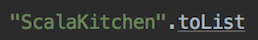

Implicits
Implicit是一個Scala非常有特色的一個功能。它可以讓使用者省去自己傳入參數的麻煩。讓library的建立者設計簡潔好用但同時保留彈性的API。
在一般的語言裡，不管我們要做什麼事都必須自行在呼叫或使用的地方寫出我們要呼叫的地方或傳入的參數，這種方式叫explicit。Implicit就是在某些特定的條件下讓你可以不用直接寫出你所要呼叫的method或傳入的參數，把這件事丟給compiler去做。這樣可以達到API的使用方便和程式碼的減少（當然對API/Library有一定了解還是需要的）。Implicit是一個keyword，它可以出現在val，def，class，object前面。當implicit出現在這些地方就表示這些東西可以implicitly被使用到。在使用implicit的地方也會用implicit的keyword出現所以不用擔心不知道是不是有implicit的使用。但宣告implicit之後並不表示不能強制傳入自己想要的參數。
有些人可能會想，既然不用直接宣告要用的東西，那會不會有runtime效能的問題或是增加runtime debug時的複雜度。runtime時的問題都不存在。Implicit是一個在compile time就會被決定的事情。如果implicit的檢查不過，compile是不會成功的。Compile出來的程式碼也是被用implicit的規則計算過後直接inline進去的。所以也不用擔心有runtime被改掉或換掉的問題。
Implicit基本上分兩種:
- Implicit Parameter
- Implict Conversion
- Implicit Method
- Implict Class
Implicit Parameters
Implicit parameter是一種不需要指定宣告傳入就可以使用的參數。Compiler會在compile的時候會在這個call site的context裡面尋找可以使用的parameter然後放入。如果找不到就會有錯。如果要讓我們的method可以使用implicit的參數，只要在參數的前面宣告implicit就可以了。可是通常我們的method都還是會有一些必須讓使用者自行輸入的參數，這時候兩種參數必須被分開在兩個不同的parameter list裡面，而且implicit的必須在最後面。
Implicit Conversion
Implicit conversion可以利用implicit的method或class來自動轉換原本的資料型態來免除一些不必要的程式碼。主要發生的地方在當我們需要一個B可是我們只有一個A的時候。在這裡如果有一個f: A => B的function那就可以直接使用了，可是還是需要去呼叫f，f(a)。可是如果用implicit，就不需要這麼麻煩了。
另外像平常在寫Web service的程式的時候通常會直接把物件當作return值回傳。可是其實最後的結果都是由某個framework在後面處理掉了，例如Apache CXF，Jersey，Spring MVC，等。
Implicit conversion可以達到類似的效果。
Library Pimping
知道implicit conversion之後，可以再對這個功能做一些延伸。既然implicit conversion可以再assign和return的時候將A轉成B，那也就可以在使用的當下直接轉成B然後使用B的method。這樣可以創造出一個A也有B的功能的假象。利用這個特性我們可以達到在一個3rd-party library或是被宣告成final的class上面加功能，而不影響它原有的source，可是使用起來還是感覺在使用原本的API。這行為被稱為library pimping，或 "pimp my library"。
常用的class String就是一個final的class。可是在一般的運用上，常常會需要把一個原始的String轉換成要使用的domain object或單純的Int，Double或Date。
Note:
其實在Scala內建的library就有應用這樣的技巧。如果注意看一下Scala的String其實就是java.lang.String。可是為什麼在寫程式的時候可以寫.toDouble或.toInt甚至是.reverse或.foldLeft等？這就是利用這種implicit conversion的技巧達到在原本沒什麼功能的String上加上這些功能而又不影響原本String該有的特性。至於負責做String轉換的程式在哪裡就留給有興趣的人去自己去找了。
另外如果使用Eclipse或Intellij開發的朋友，如果在method或變數名稱下面多了一個底線的話就是被套用了implicit。例如.toList，
View Bounds
@deprecated 雖然是一個被deprecate的pattern（被Context Bound取代），可是概念比較基礎，建議還是依序看完。
如果我們將implicit parameter跟conversion合併在一起還可以達到其它的效果例如現在要介紹的view bound。
例如我們想要接受一個List[A]然後檢查裡面是否存在a。
可是其實只要是任何可以被轉換成List[A]的物件，都可以用這個程式。像是String可以被轉成List所以應該也要可以用這個method。
這樣呼叫起來很麻煩我們可以把.toList.map變成一個implicit conversion然後在contains上面加一個implicit parameter。
利用有點syntax sugar，contains還可以被改寫的簡單一點
在這裡LA <% List[A]就被稱為 View Bound。LA <% List[A]為上限_Upper Bound_，LA %> List[A]為下限_Lower Bound_。
可以把這個當作是一種“證明”，在執行的環境下，你必須要證明LA在某種邏輯下也是List[A]的一種，你才能使用這個method。同樣的這個檢查都會在compile time的時候就做完。
Context Bound
另外一個常看到的用法叫context bound。這給大量的使用在type class pattern裡面。這個pattern讓沒有implement一些interface的class擁有一樣的功能。它同時具有bridge pattern和adapter pattern的特性。
用scala的standard library裡面的Ordering來做範例(Ordering基本上就是Java的Comparator)。
使用Ordering來付與任何物件比較與順序的能力。
之後再利用syntax sugar讓是用此pattern的API看起來更簡潔跟明確。
[A: Ordering]就形成了這個method的context bound。
如果沒有一個這樣的context bound，Ordering[A]的時候會怎樣？
之前有提到View Bound被deprecate了，那就應該要思考怎麼用Context Bound的方式做。這個例子比較特殊，要用context bound必須繞一點路，可是還是可以做的到的。要先建立一個type，然後再用一個很奇怪的syntax來宣告我們的type。如果現階段看不懂沒關係，這只是要證明基本上所有的view bound都可以重寫成context bound。這個use case如果用type class的方式實作會是一個比較漂亮的作法。（type class之後會再說明）
Reference:
Implicit的來源跟順序
看完implicit可以做到的事之後，就有來看implicit到底怎麼進入使用的scope/context，來達到使用者感覺不到和美化API的效果。
先了解compiler什麼時候知道或會嘗試套用implicit?
- 在一個物件上呼叫一個method可是這個物件並沒有這個method
- 在呼叫一個有implicit parameter的method
Compiler在尋找implicit的順序如下：(1會比2有優先權，如果有相等優先權，就會比較那一個比較精準)
- 在當下的scope尋找
- 尋找相關類別(associated type)
- companion objects
- implicit scope of an argument's type
- implicit scope of type arguments
- outer objects for nested types
這些到底是什麼意思呢？ 以下是範例：
直接將要用的implicit指名道姓的import進來
用_的方式import進來，會被explicit import的方式蓋過，因為explicit import比較精確。
-
在這裡companion object會在兩個地方出現
- "source" object的companion object
舉例在下面的例子在
Option的companion object裡面有一個implicit coverter將Option轉換成Iterable，所以在任何時候都可以在Option上使用Iterable的method或是將Option傳給需要Iterable的method。會被轉換成
可是在這裡
List.flatMap要求的是TraversableOnce。可是Option不是。這時候compiler就會在Option的companion object裡面找到這個implicit coverter然後將Option轉換成Traversable同時也是TraversableOnce。- 要求類型的companion object
在這裡
.sorted需要一個implicit的Ordering。這時候compiler會在Ordering的companion object裡面尋找，會找到一個implicitOrdering[Int]。另外如果Ordering有super class的companion object的話，compiler也會進去找。 -
implicit scope of an argument's type
如果一個method的argument是type
A那A的"implicit scope"也會被納入(Implicit Scope就是一整個這一篇談到的所有implicit檢查條件重複的檢查一直到最後找到或完全找不到)。這表示不止是A裡面的implicit conversion會被套用在這個parameter上，而是一整個expression都有可能用的到。 -
implicit scope of type arguments
這是讓type class可以正常運作的條件。以
Ordering為例，Ordering本身就有一下implicit可以用，可是卻不能在它裡面再增加。那怎麼能讓在需要Ordering的時候可以有需要的implicitOrdering呢？如果有：
然後再來要sort
這裡我們知道
sorted需要一個Ordering[A]，可是在Ordering跟List(source type)裡面都沒有。這時候就會進A去找。A就是Ordering[A]的 type argument。Note: 如果有看過List/Seq的ScalaDoc的話，可能在很多API會注意到一個
CanBuildFrom的implicit參數，它就是用這個機制在你不需要知道去哪裡找這個東西的時候幫你放進來的。 -
outer objects for nested types
當有inner class的時候，該class的outer class也會成為被搜尋implicit的對象。
Note: Implicit Scope包含package object
Implicit Scope的範圍另外包含的對應types所屬的package的package object。
(以下範例必須貼到一個scala檔案裡面用main來執行)
References: